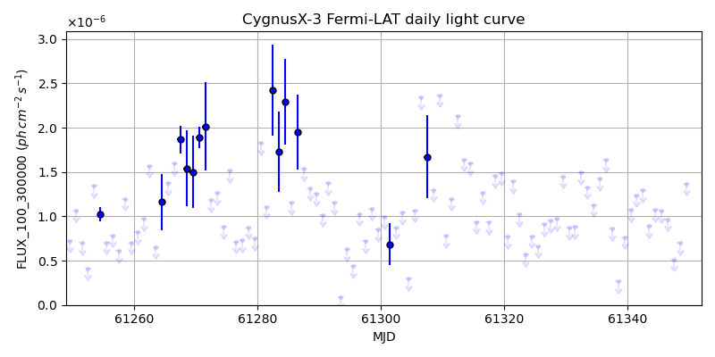
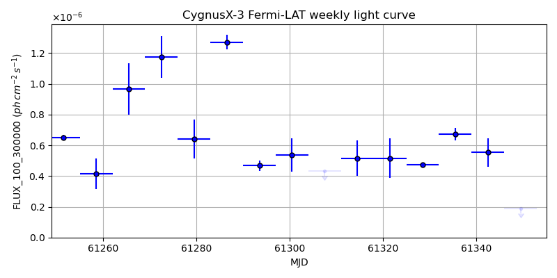
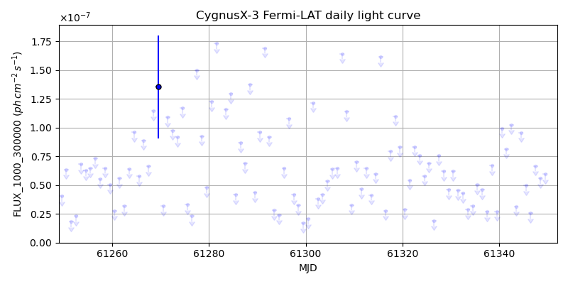
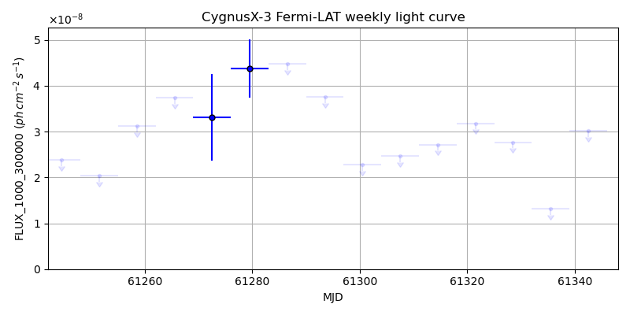

LAT Lightcurve site: https://fermi.gsfc.nasa.gov/ssc/data/access/lat/msl_lc/source/Cygnus_X-3
NED: Query
Time of last update of this page: UT: 2026-11-06 16:26 (MJD: 61350.685)
| Property | Value |
|---|---|
| R.A. | 20:32:25.68 |
| Dec. | 40:57:28.8 |
| z | 0.000 |
| 3FGL SpectrumType | |
| 3FGL PL Index | -1.00 |
| 3FGL Flux_100_300000 | -1.00e+00 |
| 3FGL Flux_1000_300000 | -1.00e+00 |
| 3FGL Flux >200 GeV | -1.00e+00 |
| 3FGL Extrap. Crab >200 GeV | -1.00 |
| 3FGL Flux After EBL Absorption >200GeV | -1.00e+00 |
| 3FGL EBL Crab Fraction >200GeV | -1.00 |

| MJD | dMJD | Flux | dFlux | Frac3FGL | FracCrab>200GeV | EBLFracCrab>200GeV |
|---|---|---|---|---|---|---|
| 61345.50 | 0.50 | 1.06e-06 | 0.00e+00 | 0.00 | 0.00 | -0.00 |
| 61346.50 | 0.50 | 9.66e-07 | 0.00e+00 | 0.00 | 0.00 | -0.00 |
| 61347.50 | 0.50 | 5.14e-07 | 0.00e+00 | 0.00 | 0.00 | -0.00 |
| 61348.50 | 0.50 | 6.98e-07 | 0.00e+00 | 0.00 | 0.00 | -0.00 |
| 61349.50 | 0.50 | 1.37e-06 | 0.00e+00 | 0.00 | 0.00 | -0.00 |

| MJD | dMJD | Flux | dFlux | Frac3FGL | FracCrab>200GeV | EBLFracCrab>200GeV |
|---|---|---|---|---|---|---|
| 61314.50 | 3.50 | 5.16e-07 | 0.00e+00 | 0.00 | 0.00 | -0.00 |
| 61321.50 | 3.50 | 5.16e-07 | 0.00e+00 | 0.00 | 0.00 | -0.00 |
| 61328.50 | 3.50 | 4.73e-07 | 0.00e+00 | 0.00 | 0.00 | -0.00 |
| 61335.50 | 3.50 | 6.71e-07 | 0.00e+00 | 0.00 | 0.00 | -0.00 |
| 61342.50 | 3.50 | 5.53e-07 | 0.00e+00 | 0.00 | 0.00 | -0.00 |

| MJD | dMJD | Flux | dFlux | Frac3FGL | FracCrab>200GeV | EBLFracCrab>200GeV |
|---|---|---|---|---|---|---|
| 61345.50 | 0.50 | 4.96e-08 | 0.00e+00 | 0.00 | 0.00 | -0.00 |
| 61346.50 | 0.50 | 2.55e-08 | 0.00e+00 | 0.00 | 0.00 | -0.00 |
| 61347.50 | 0.50 | 6.66e-08 | 0.00e+00 | 0.00 | 0.00 | -0.00 |
| 61348.50 | 0.50 | 5.58e-08 | 0.00e+00 | 0.00 | 0.00 | -0.00 |
| 61349.50 | 0.50 | 5.94e-08 | 0.00e+00 | 0.00 | 0.00 | -0.00 |

| MJD | dMJD | Flux | dFlux | Frac3FGL | FracCrab>200GeV | EBLFracCrab>200GeV |
|---|---|---|---|---|---|---|
| 61314.50 | 3.50 | 2.72e-08 | 0.00e+00 | 0.00 | 0.00 | -0.00 |
| 61321.50 | 3.50 | 3.18e-08 | 0.00e+00 | 0.00 | 0.00 | -0.00 |
| 61328.50 | 3.50 | 2.77e-08 | 0.00e+00 | 0.00 | 0.00 | -0.00 |
| 61335.50 | 3.50 | 1.31e-08 | 0.00e+00 | 0.00 | 0.00 | -0.00 |
| 61342.50 | 3.50 | 3.01e-08 | 0.00e+00 | 0.00 | 0.00 | -0.00 |
--------------------------------------------------------- Using user-supplied coords: 20:32:25.68 40:57:28.8 2000 --------------------------------------------------------- FLWO UT night of: 2026-11-07 Local Sid. @ Midnight: 02:42 Sunset (-15.0) (local, UT): 18:39 01:39 Sunrise (-15.0) (local, UT): 05:36 12:36 Moonrise (local, UT): 05:16 12:16 Moonset (local, UT): Moon phase: 0.04 --------------------------------------------------------- AzTime LSID UT Obj_el Obj_az Mn_el Mn_az Sep. --------------------------------------------------------- 18:39 21:20 01:39 76.7 318.2 -35.5 278.9 114.9 19:09 21:50 02:09 72.0 306.7 -41.6 283.5 114.7 19:39 22:20 02:39 66.6 301.2 -47.5 288.8 114.5 20:09 22:50 03:09 61.1 298.6 -53.3 295.3 114.4 20:39 23:20 03:39 55.4 297.7 -58.7 303.4 114.2 21:09 23:50 04:09 49.8 297.7 -63.5 313.9 114.0 21:39 00:20 04:39 44.1 298.5 -67.5 328.0 113.8 22:09 00:50 05:09 38.5 299.7 -70.0 346.2 113.6 22:39 01:20 05:39 33.0 301.3 -70.5 6.9 113.4 23:09 01:51 06:09 27.6 303.3 -68.8 26.6 113.2 23:39 02:21 06:39 22.3 305.5 -65.4 42.5 113.0 00:09 02:51 07:09 17.2 308.1 -60.9 54.4 112.9 00:39 03:21 07:39 12.3 311.0 -55.8 63.5 112.7 01:09 03:51 08:09 7.6 314.2 -50.2 70.6 112.5 01:39 04:21 08:39 3.3 317.7 -44.4 76.4 112.4 02:09 04:51 09:09 -0.4 321.6 -38.4 81.4 112.2 02:39 05:21 09:39 -4.0 325.8 -32.4 85.8 112.0 03:09 05:51 10:09 -8.3 330.4 -26.3 89.9 111.9 03:39 06:21 10:39 -11.2 335.3 -20.2 93.7 111.8 04:09 06:51 11:09 -13.6 340.6 -14.2 97.5 111.7 04:39 07:21 11:39 -15.4 346.1 -8.1 101.2 111.6 05:09 07:52 12:09 -16.6 351.9 -1.2 105.0 111.5 05:36 08:19 12:36 -17.2 357.2 3.4 108.6 111.4 --------------------------------------------------------- Dark hours >55 deg.: 2.04 srcstart (UT): 2026-11-07 01:38 srcend (UT): 2026-11-07 03:41